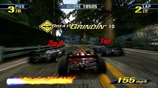

Next are 3D-style graphics, which were popular in the 1990s and 2000s. There is a wide range of 3D graphics since they improved vastly from their introduction to their later years and eventual evolution into HD and realism.
3D graphics had more detail, texture, and better quality than 16-bit graphics. There were also many differences in artistic styles, as shown in the games below. Some featured a more cartoon style, such as Super Mario 64, while others, such as Grand Theft Auto: San Andreas, focused on creating a realistic setting and character design.
Video game consoles with 3D graphics include the Nintendo 64, the original Play Station, Play Station 2, and Microsoft Xbox.
